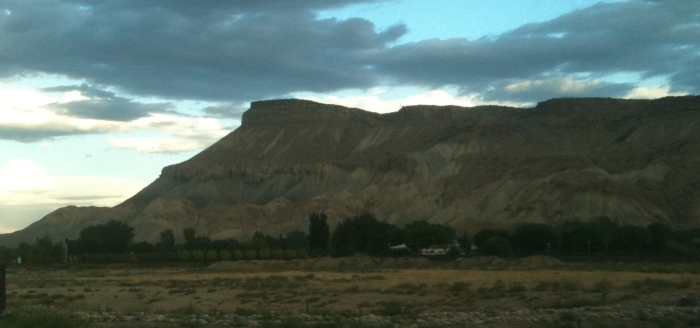

Mesa County, Colorado
Mesa County is located in the in the western part of Colorado centered around the city of Grand Junction. The Grand Valley, located
at the confluence of the Colorado and Gunnison Rivers, is the heart of the state's viticulture.
Appellations:
Grand Valley
Vineyards & Wineries:
Bookcliff
Canyon Wind
Verso
|
|